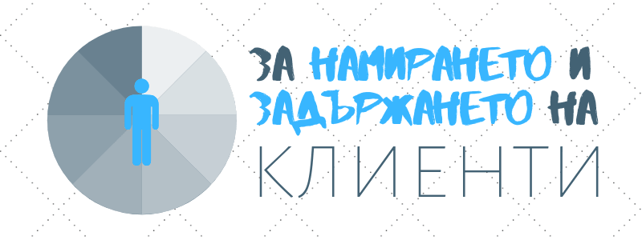

Намиране и задържане на клиенти
Ако искаш бизнес, ти трябва да намериш и отидеш при клиента, а не обратното.
Затова и търговски представител е най- търсената позиция в момента (с изключение на софтуерен инженер).
Продаването не е лесно, но има стъпки, които да предприемем, за да успяваме да постигнем целите си.
Изглеждайте като професионалист- те дръжат на постоянството и отговорността, не се отказват при първата трудност и гледат в перспектива.
Дайте на потенциалните си клиенти множество начини да се свържат с вас като адрес, телефон, имейл, скайп и т.н.
Свържете се с по- голяма организация, с която да се заемете с по- големи проекти или с някой с допълващи се умения.
Участвайте в гилдии и други сдружения на занаята ви.
Свържете се с предишни клиенти за препоръки, отзиви или още работа.
Ако според вас клиентът ви не разбира какво точно предлагате, опитайте да го обучите, а не влизайте в конфликт.
Ако при първия досег с бизнеса ви има някакви често задавани въпроси или имате нужда от информация, изгответе въпросник. Така ще знаете, че са сериозни и ще имате отправна точка и нужното да прецените, ако не е добре да работите с тях.
Как ще ви откриват?
Ако чакате да ви забележат, ще има да побелеете и да ви изсъхнат костите. Затова трябва да действате!
В общи линии начините да чуят за вашия бизнес са: споделяте с познати, крадете публиката на бранд или влиятелен човек в нишата ви или си плащате.
Ето и с какво се сблъскват от другата страна, когато научат за продуктите или услугите ви:
- страничен проект: трябва да е полезно и споделяемо;
- обява: по- трудно да се убедят в опита и знанията ви;
- реклама: плащате си за внимание с пари, а не с време и търпение;
- партньор: ще осигурява потока на клиенти докато вършите работата;
- съдържание: блог или статии на чужда платформа, лендинг страница, ръководство, доклад, електронна книга, подкаст, видео (в youtube или facebook live); разчитате на SEO, което е бавно.
Намиране, задържане и ангажиране
Когато общувате с настоящи или бъдещи клиенти ви е необходима месиджинг стратегия, включително онлайн.
Може да се опитате да сте навсякъде, но така само ще си загубите времето без да постигнете каквото и да било. Винаги може да добавяте, но постепенно.
Трябват ви три канала (като може две функции да се припокриват): един за придобиване, един за задържане и един за ангажиране.
Придобиването или намирането на клиенти изисква голям поток на посетители, които да попадат на вашия бизнес или да ви препоръчват, или шанс.
Задържането на клиенти има за цел периодично да им напомня за съществуването ви, което не бива да се пренебрегва, но най- лесно се автоматизира.
Ангажирането ви позволява да поддържате връзка с клиенти, като ви позволява да им напомняте за тях за да ви наемат пак и да научавате за нуждите и ежедневието им.
Някои варианти са:
- придобиване: търсачки (SEO), препоръки, социални медии;
- задържане: имейл, twitter, pinterest, facebook, instagram, youtube;
- ангажиране: twitter, slack, facebook group, meetup.
Как да намерите нишата си
Колкото специфично определим желаните клиенти, толкова по- лесно ще намираме и общуваме с тях: футболните маниаци са на стадиона, а фрийлансърите в Upwork.
Често когато мислим за нишата, която искаме да обслужваме се сещаме за демографията. Но възрастта или местоположението на някой може да не се отразява на нуждата им от вашите услуги или продукти. Затова по- добър критерий е да научите какво ги вълнува, тоест психографията.
Ако се страхувате, че ако изберете ниша, ще има прекалено малко хора, помислете, че не ви трябва цял стадион клиенти, а най- вероятно само дузина. А ако говорите с правилните хора- такива, които се нуждаят отчаяно или редовно от решението ви или са изключително ангажрани с темата, не е необходимо те да са много.
Освен това не бранда, мястото или цветовете привлича идеалните ви клиенти, а сърцето, увереността и ентусиазма ви да работите с тях. Замислете се с кой искате да работите, така че страстта да ви накара да покажете най- доброто, на което сте способни. Избираме си доставчици, адвокати или шивачи хем разсъдъчно, хем интуитивно.
Когато видят, че си обичате заниманието, ще идват и хора, които не отговарят на условията ви и пак може да ги приемете.
А и не сте закотвени за решението си- по всяко време може да си смените мнението. Като навлезете в практиката естествено ще смените както офертите, така и брандинга си. Всички бизнеси се променят непрестанно.
Алтернативите на продаването
В капиталистическата ни система, ако не участваме на пазара било на труда, било на стоките и услугите, това ще доведе до унищожението ни.
Ако не искаме да успеем без да крадем, без да просим или без да вземаме заеми, единствената ни алтернатива е да се научим да продаваме.
Но тъй като това се опира на убедителност, умения и доверие, за да продаваш трябва да демонстрираш:
- че разбираш точната нужда,
- че можеш да работиш качествено,
- че няма да се отметнеш (дългосрочност и постоянство),
- че си заложил репутацията си (впечатляващ офис, контакти, публични обещания),
- че си вложил ресурси (време, пари и мисъл).
Не е толкова лесно или просто!
Как и какво ще продавате?
Понякога се колебаем да продаваме защото не сме уверени какво продаваме или какво целим. Това се отнася какво за момента, така и за бъдещите ви планове.
Затова се запитайте и поровете в съзнанието си.
Коя е идеалното ви позициониране, с други думи как да ви възприемат клиентите и вие самите: като консултант, като занаятчия (бижута, търлички, дизайн) или като бизнес от един или агенция?
Какво предлагате: услуги (консултации или направено готово) или продукти (дигитални или физически)? Най- бързо ще спечелите пари и опит като започнете с услуги, а чак като сте по- уверени да изработите информационни или предварително направени продукти.
Клиентите ви лукс ли търсят или практическо решение? От голям трафик ли зависите или да се фокусирате върху няколко, но влиятелни клиента? Нови или повторяеми клиенти преследвате и колко са ви необходими? Върху качество или количество се съсредоточавате?
При продукцията, както и при доста услуги, дали се насочите към такива или онакива клиенти коренно променя бизнеса ви защото най- общо:
- B2B: осигурява съдържанието и материала,
- B2C: осигурява разпространението.
Как ще ви плащат: предварително или не, наведнъж или на вноски, по банкова сметка или в брой?
Колко може да продължавате (финансово или мотивационно) докато намерите публика или станете печеливши?
За повече начини да проучите и привлечете клиенти, вижте по- подробното и безплатно обучение по маркетинг.